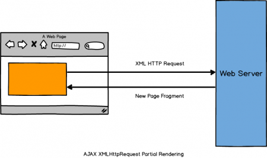

Single Page Web Applications
By Anuja Joshi
What is Single Page Web Apps (SPA)
- Web applications that fits on single web page
- Provide more fluid user experience similar to desktop application
- No full page reloads
- No control transfer to another page
- Server interaction only using XHR
Traditional Approach

SPA Approach

- No full page reloads
- No control transfer to another page
- Server interaction only using XHR
Architecture
Single Page Web Apps typically have
- Fluid transitions between page states
- Dynamic data loading from server-side API
- Back/Forward Button works as expected
- More javascript than actual HTML
- Ability to go offline
- URL hashes are used to track state and provide bookmark-able links
Core Benefits - Performance Improvement
- Less data transfer: XHR calls only send
- Uses less network bandwidth
- Raw data, not HTML markup
- Load Distribution: less load on your server, by distributing it to clients
- Caching gets a lot easier and more beneficial
SPA Benefits
- Its an application so it can do cool stuff!
- Responsive, native application feel. No page flicker
- Faster UI, more Interactive
- Support multiple platforms
- Super duper farameworks
Building single page web apps
- Choosing the right tool/framework for the back-end service/API:
ROR, ASP.NET MVC etc, - Choosing the right library/framework for the client part of the application:
Batman.js, Backbone.js, Knockout.js, Angular.js, Ember.js
client-side view
< tr ng-repeat="performer in performers">
{{performer.name}}
{{performer.email}}
{{performer.age}}
{{performer.art}}
< /tr>
Factory for performers
myApp.factory('Performers', ['$resource',function($resource){
return $resource('/performers.json', {},{
query: { method: 'GET', isArray: true },
create: { method: 'POST' }
})
}]);
controller for listing entries
myApp.controller("PerformerListCtr", ['$scope', 'Performers',
function($scope, Performers) {
$scope.performers = Performers.query();
}]);
routing
myApp.config([
'$routeProvider', '$locationProvider', function($routeProvider, $locationProvider) {
$routeProvider.when('/performers',{
templateUrl: '/templates/performers/index.html',
controller: 'PerformerListCtr'
});
$routeProvider.when('/performers/new',{
templateUrl: '/templates/performers/new.html',
controller: 'PerformerAddCtr'
});
$routeProvider.otherwise({
redirectTo: '/performers'
});
}
]);
server side index method
def index
@performer = Performer.all
respond_with(@performer) do |format|
format.json { render :json => @performer.as_json }
format.html
end
end
Challenges
- URLs
- Search engine optimization
- first page load slow
- lack of error tracking
Worth trouble?
- Better user experiance
- Efficient utilization of available resources
- Good impression